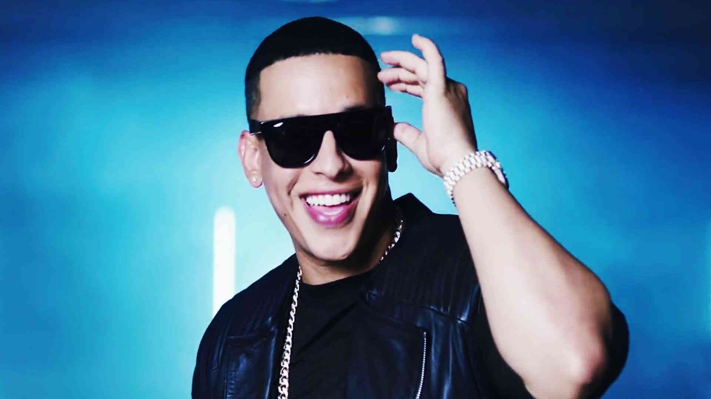

El Rey Don Omar
William Omar Landrón Rivera, conocido artísticamente como Don Omar, es un cantante y actor puertorriqueño. Es conocido por ser uno de los precursores del Reggaetón y por su trabajo en el mismo. También se desempeñó en géneros como salsa, merengue, bachata, mambo, entre otros. Para este 2019, tenía planeado sacar Sociedad Secreta (álbum), su sexto álbum de estudio.
Carrera
Sus inicios musicales se vinculan a la iglesia, a la que estuvo ligado como pastor protestante durante cuatro años. Canta por primera vez en la producción "Génesis" del año 1996 en un dúo llamado Osito & Omar. Su primera presentación pública en un club nocturno fue acompañado por el disc-jockey Eliel Lind Osorio. Después actuó con regularidad en álbumes recopilatorios de DJ's y productores populares como Luny Tunes, Noriega y DJ Eric. También trabajó como corista del dúo Héctor & Tito. Uno de los miembros, Héctor Delgado, le ayudó a producir su primer disco en solitario.


Daddy Yankee The Big Boss
Ramón Luis Ayala Rodríguez, conocido como Daddy Yankee, es un cantante, actor, productor discográfico, locutor de radio11 y empresario estadounidense de origen puertorriqueño.
Diversos sectores de la crítica le consideran "El rey del reguetón", por ser uno de los pioneros del reguetón y de los responsables de haber popularizado ese género musical en América Latina y el resto del mundo tras haberse consolidado como uno de los artistas más respetados e influyentes del circuito urbano latino.
Luego de haber establecido una carrera musical en su natal Puerto Rico, en julio de 2004 Daddy Yankee lanzó internacionalmente su tercer álbum de estudio, Barrio fino, que logró ubicarse en la primera posición en ventas de la lista Top Latin Albums de Billboard.
Parte de su éxito reside en haber dado a conocer el reguetón en particular y la música urbana latina en general fuera del mercado latinoamericano, logrando establecer varios éxitos en mercados musicales importantes como Europa.
Ha obtenido diversos reconocimientos, entre los que se encuentran, once premios Billboard de la Música Latina en las categorías de artista y álbum latino del año en 2005.
También fue ganador de dos Premios MTV Latinoamérica en 200633 y 2007.
- Don Omar
- Daddy Yankee
- Becky G
- Maluma
- Bad Bunny
- Natti Natasha
- Nicky Jam
- J Balvin
- Ozuna
- Zion & Lennox
- Karol G
- Wisin & Yandel
- Farruko
- Nacho
- CNCO
- Luis Fonsi